Use the ordinal probit regression model if your dependent variables are ordered and categorical. They may take either integer values or character strings. The model is estimated using a Gibbs sampler with data augmentation. For a maximum-likelihood implementation of this models, see probit.
With reference classes:
z5 <- zoprobitbayes$new()
z5$zelig(Y ~ X1 + X2, data = mydata)
z5$setx()
z5$sim()
With the Zelig 4 compatibility wrappers:
z.out <- zelig(Y ~ X1 + X2, model = "oprobit.bayes", data = mydata)
x.out <- setx(z.out)
s.out <- sim(z.out, x = x.out)
zelig() accepts the following arguments to monitor the Markov chain:
Use the following parameters to specify the model’s priors:
Zelig users may wish to refer to help(MCMCoprobit) for more information.
Attaching the sample dataset:
data(sanction)
Estimating ordered probit regression using oprobit.bayes:
z.out <- zelig(ncost ~ mil + coop, model = "oprobit.bayes",
data = sanction, verbose = FALSE)
## Warning in model.response(mf, "numeric"): using type = "numeric" with a
## factor response will be ignored
## How to cite this model in Zelig:
## Ben Goodrich, Ying Lu. 2013.
## oprobitbayes: Bayesian Probit Regression for Dichotomous Dependent Variables
## in Kosuke Imai, Gary King, and Olivia Lau, "Zelig: Everyone's Statistical Software,"
## http://zeligproject.org/
Creating an ordered dependent variable:
sanction$ncost <- factor(sanction ~ ncost, ordered = TRUE,
levels = c("net gain", "little effect", "modest loss",
"major loss"))
## Error in as.vector(x, mode): invalid 'mode' argument
Checking for convergence before summarizing the estimates:
heidel.diag(z.out$coefficients)
raftery.diag(z.out$coefficients)
summary(z.out)
Setting values for the explanatory variables to their sample averages:
x.out <- setx(z.out)
Simulating quantities of interest from the posterior distribution given: x.out.
s.out1 <- sim(z.out, x = x.out)
summary(s.out1)
##
## sim x :
## -----
## ev
## mean sd 50% 2.5% 97.5%
## little effect 0.44981581 0.05601155 0.44883053 0.34151148 0.56103192
## major loss 0.04473004 0.02101827 0.04176495 0.01271310 0.09412959
## modest loss 0.12341501 0.03950140 0.11984735 0.06005967 0.22834556
## net gain 0.38203914 0.05548348 0.38097907 0.27602445 0.49205957
## pv
## qi
## little effect major loss modest loss net gain
## 0.1868 0.2731 0.5213 0.0188
Estimating the first difference (and risk ratio) in the probabilities of incurring different level of cost when there is no military action versus military action while all the other variables held at their default values.
x.high <- setx(z.out, mil = 0)
x.low <- setx(z.out, mil = 1)
s.out2 <- sim(z.out, x = x.high, x1 = x.low)
summary(s.out2)
##
## sim x :
## -----
## ev
## mean sd 50% 2.5% 97.5%
## little effect 0.43844669 0.05843957 0.43767439 0.32758262 0.55410854
## major loss 0.04458012 0.02095061 0.04165022 0.01271633 0.09387773
## modest loss 0.12377654 0.03963082 0.12024928 0.05993637 0.22927426
## net gain 0.39319665 0.05795514 0.39196529 0.28336346 0.50825527
## pv
## qi
## little effect major loss modest loss net gain
## 0.1491 0.2382 0.5780 0.0347
##
## sim x1 :
## -----
## ev
## mean sd 50% 2.5% 97.5%
## little effect 0.5464229 0.16109327 0.54796938 0.23474072 0.84451223
## major loss 0.0407613 0.01998891 0.03763614 0.01085385 0.08828575
## modest loss 0.1075956 0.03975880 0.10421634 0.04208043 0.20132712
## net gain 0.3052203 0.14485132 0.29018143 0.07362204 0.62315150
## pv
## qi
## little effect major loss modest loss net gain
## 0.6116 0.0963 0.1862 0.1059
## fd
## mean sd 50% 2.5% 97.5%
## little effect 0.107976200 0.17020693 0.111082214 -0.22740084 0.426282862
## major loss -0.003818825 0.00665593 -0.001418880 -0.02253975 0.002180789
## modest loss -0.016180976 0.02172754 -0.008327805 -0.07580491 0.005015329
## net gain -0.087976398 0.15275950 -0.102164237 -0.34480882 0.241227653
Let  be the ordered categorical dependent variable for
observation
be the ordered categorical dependent variable for
observation  which takes an integer value
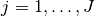.
which takes an integer value
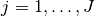.
The stochastic component is described by an unobserved continuous variable, 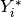,
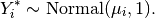
Instead of , we observe categorical variable 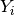,
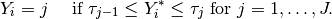
where 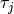 for 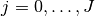 are the threshold
parameters with the following constraints, 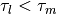
for  , and 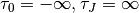.
, and 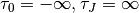.
The probability of observing equal to category  is,
is,
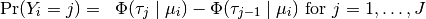
where 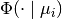 is the cumulative distribution function of the Normal distribution with mean 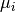 and variance 1.
The systematic component is given by

where  is the vector of
is the vector of  explanatory variables
for observation and
explanatory variables
for observation and  is the vector of
coefficients.
is the vector of
coefficients.
The prior for is given by

where 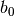 is the vector of means for the
explanatory variables and 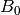 is the 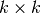
precision matrix (the inverse of a variance-covariance matrix).
The expected values (qi$ev) for the ordered probit model are the predicted probability of belonging to each category:
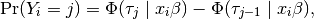
given the posterior draws of and threshold parameters
 from the MCMC iterations.
from the MCMC iterations.
The predicted values (qi$pr) are the observed values of
given the observation scheme and the posterior draws of
and cut points from the MCMC iterations.
The first difference (qi$fd) in category for the
ordered probit model is defined as
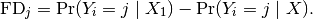
The risk ratio (qi$rr) in category is defined as
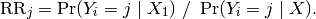
In conditional prediction models, the average expected treatment
effect (qi$att.ev) for the treatment group in category
is
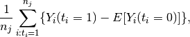
where  is a binary explanatory variable defining the
treatment (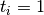) and control (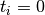) groups, and
is a binary explanatory variable defining the
treatment (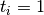) and control (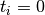) groups, and
 is the number of observations in the treatment group that
belong to category .
is the number of observations in the treatment group that
belong to category .
In conditional prediction models, the average predicted treatment
effect (qi$att.pr) for the treatment group in category
is
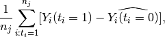
where is a binary explanatory variable defining the
treatment () and control () groups, and
is the number of observations in the treatment group that
belong to category .
The output of each Zelig command contains useful information which you may view. For example, if you run:
z.out <- zelig(y ~ x, model = "oprobit.bayes", data)
then you may examine the available information in z.out by using names(z.out), see the draws from the posterior distribution of the coefficients by using z.out$coefficients, and view a default summary of information through summary(z.out). Other elements available through the $ operator are listed below.
and threshold parameters
. Note, element 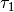 is normalized to 0 and
is not returned in the coefficients object.Bayesian ordinal probit regression is part of the MCMCpack library by Andrew D. Martin and Kevin M. Quinn . The convergence diagnostics are part of the CODA library by Martyn Plummer, Nicky Best, Kate Cowles, and Karen Vines.